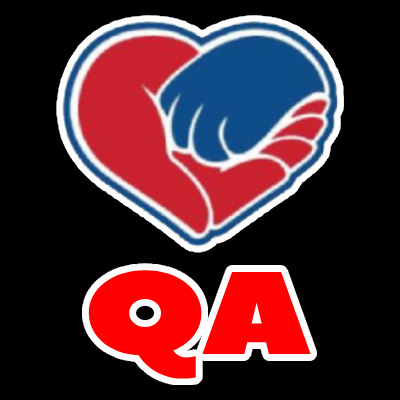
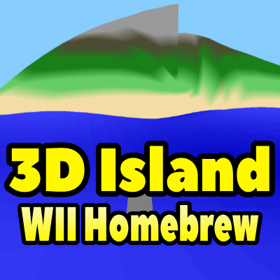

QA Capstone Lead
Load-Balanced System

3D Island (Wii Homebrew)
Web App (Node.js)

AI Independent Study
Scheduling App
Other Projects
Linux Kernel Module
To better understand how operating systems function at a low level, I explored development within the Linux kernel environment. This project focused on interacting directly with core system components rather than user-space applications.
The goal was to design and implement a functional kernel module that could safely integrate with the OS while maintaining stability. This required careful planning due to the risks associated with kernel-level development.
I developed the module in C, working with memory access, kernel structures, and system-level debugging tools. Testing involved iterative loading and unloading of the module while monitoring system behavior and logs.
As a result, I gained hands-on experience with operating system internals, improved my debugging skills in constrained environments, and developed a deeper understanding of how software interacts with hardware at the system level.
Simulation & Systems Experiments
I explored simulation development to better understand how systems evolve over time and how individual components interact within defined environments. These projects were designed to model behavior rather than simply produce static outputs.
The objective was to create flexible simulation frameworks that could represent dynamic interactions between entities and their environment. This required designing systems that could scale and adapt as complexity increased.
I implemented rule-based logic, state management, and interaction systems, iterating on performance and structure to ensure efficiency. Multiple versions were developed to test different approaches to system design and optimization.
These efforts improved my understanding of emergent behavior, system architecture, and performance trade-offs, while also strengthening my ability to design scalable and maintainable simulation systems.
Collaborative Development Projects
Throughout my academic experience, I participated in multiple team-based software and game development projects. These environments emphasized collaboration, adaptability, and shared ownership of outcomes.
The goal in these projects was to rapidly prototype functional systems while maintaining clear communication and coordination among team members. Deadlines and evolving requirements required consistent iteration and flexibility.
I contributed by implementing features, debugging issues, and assisting with design decisions. I also worked closely with teammates to refine ideas and ensure cohesive system integration.
As a result, I strengthened my teamwork and communication skills, gained experience working in real-world development workflows, and improved my ability to contribute effectively in collaborative technical environments.